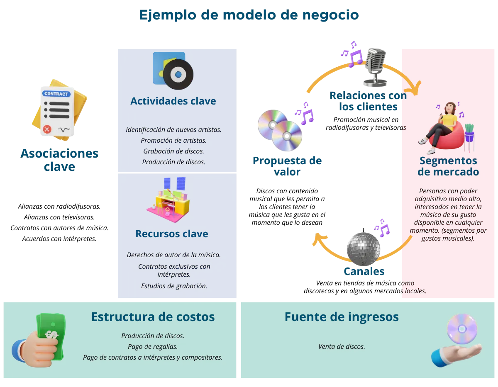

Estamos asistiendo a una revolución tecnológica sin precedentes y esto está cambiando la manera de hacer negocios en el mundo, implica que las pymes deben rediseñar su papel y replantearse su definición de negocio, es decir necesitan establecer relaciones colaborativas en su mercado, con los clientes, con la competencia, con otras empresas es decir convertirse en empresas más flexibles.
Un modelo de negocio se conoce como el esquema en el que la empresa crea valor y logra monetizarlo, sin embargo, esto que parece tan sencillo tiene tras de sí el análisis de muchos elementos internos y externos a la organización.
De la definición del modelo de negocio, derivan muchas de las estrategias de la empresa, por lo que es de gran relevancia conocer todos los aspectos a evaluar al momento de generar un modelo de negocio.
Así, el modelo de negocio alude a una estructura lógica y debidamente planificada mediante la cual una empresa crea, captura y genera valor a través del uso de las tecnologías digitales y la presencia en Internet.
En esencia, el modelo de negocios es la manera en que una empresa planifica generar ingresos y obtener beneficios en la era digital.
En este eje temático se analizará la relevancia de establecer un modelo de negocio, se definirá qué es un modelo de negocio y cada uno de los elementos que hay en torno a él y, finalmente, se analizarán distintos modelos de negocio en el mundo digital.
Un modelo de negocio es la forma en que una empresa crea, entrega y captura valor para sus clientes, socios y accionistas. Es la lógica que sigue una empresa para conseguir ingresos y beneficios. Un modelo de negocio bien diseñado puede ser la clave para el éxito de una pyme, ya que le permite diferenciarse de la competencia, satisfacer las necesidades de los consumidores y generar valor para todos los involucrados.
En los años recientes, el término modelo de negocios se ha “puesto de moda”, en todos los programas de creación, apoyo y fomento a las empresas se suele hablar de la relevancia del modelo de negocio, sin embargo, este concepto no es nuevo, pues ha existido desde el mismo momento en el que aparecieron las empresas en el mundo, la diferencia es que hoy en día se ha logrado tener claridad de lo que el modelo de negocio representa y con ello se ha podido innovar en él.
Un ejemplo, la venta de alimentos. Esta actividad ha existido por muchos años, alguien elabora comida, la ofrece y alguien más paga por ella. Este modelo de negocio es muy sencillo, y es el modelo básico y elemental, sin embargo, a partir de él, se han generado innovaciones, no tanto en la comida, sino en cuanto a la manera en la que se acerca la comida a los clientes.
En la India, hace poco más de 125 años surgió un servicio de traslado de alimentos conocido como Dabbawala, este servicio no fabrica o produce alimentos, solamente lleva los alimentos que las amas de casa elaboran a los familiares que trabajan en oficinas o en otros sitios. Hoy en día este servicio entrega diariamente más de 175,000 cajas de alimento, es reconocido mundialmente como uno de los procesos logísticos más perfectos del mundo, y está operado totalmente por personas que en su mayoría son analfabetos. El modelo de negocio de los Dabbawala es acercar los alimentos de casa a los lugares de trabajo, resolviendo una necesidad específica de los habitantes de Mumbay. Este ejemplo sirve para identificar que un modelo de negocio requiere identificar una necesidad en los clientes, diseñar una solución para esa necesidad, y cobrar por esa solución. Es decir, los habitantes de Mumbay tenían la necesidad de acercar sus alimentos de sus casas a sus lugares de trabajo, los Dabbawala diseñaron una solución, de forma simple, que resolvía esa necesidad y reciben una paga mensual por parte de sus clientes, por llevar y traer alimento por toda la ciudad.
Entonces ya no se trata solo de vender comida, ahora se trata de trasladar la comida, es decir no se está innovando el producto, sino que la innovación se genera en la manera en la que se resuelve la necesidad del consumidor mediante el producto y un servicio.
En este mismo ejemplo, hoy en día podemos ver muchos modelos de negocio, como son las aplicaciones que permiten solicitar alimentos a domicilio, pero también se han generado modelos de negocio conocidos como “dark kitchen”, o restaurantes virtuales, que son restaurantes que en realidad no existen, no tienen mesas o sillas, pero ofrecen comida a través de las aplicaciones web. Algunos modelos más recientes y novedosos son restaurantes que cobran por minuto de estancia, o aquellos en los que el cliente puede llevar su propia comida si así lo desea, y solo paga por la estancia en el lugar, así como por las bebidas y postres que consume, entre otros.
Ya no se trata solo de hacer comida y venderla, se trata de identificar cuál es la necesidad del cliente, diseñar una forma de resolver esa necesidad y determinar la manera de generar ingresos por ayudarle al cliente a satisfacer dicha necesidad.
En términos generales un modelo de negocio es la descripción de cómo una organización crea, entrega y obtiene valor tanto para ella como para sus clientes. Aunque existen muchas definiciones, en términos generales un modelo de negocio debe ayudar a responder las preguntas de “quién es su cliente, qué valor puede crear/añadir para el cliente y cómo puede hacerlo a un costo razonable”, las respuestas deben definir todo lo relacionado con el diseño y la fabricación del producto, todo lo relacionado con la venta del producto, desde la búsqueda de los clientes adecuados hasta la distribución del producto y todo lo relacionado con cómo pagará el cliente y cómo generará ingresos la empresa (EVPA Knowledge Centre, 2018) (OIT, 2020).
En última instancia, la innovación en modelos de negocio consiste en crear valor para las empresas, los clientes y la sociedad sustituyendo los modelos obsoletos, para responder a las nuevas necesidades de los usuarios.
La innovación en pequeñas empresas tiene una ventaja ya que la experimentación de productos o servicios nuevos a pequeña escala se consiguen mejor en grupos flexibles, donde los individuos y los equipos de pequeño tamaño gozan de mayor autonomía. En otras palabras, las pequeñas empresas pueden diseñar y experimentar modelos de negocio que sean novedosos y rompan las reglas tradicionales en el mercado, entre algunos de sus clientes, al final con esos resultados se pueden tomar decisiones, si funciona bien se pueden ampliar, si no funciona, se desecha o se ajusta, de acuerdo con la evaluación.
Sugerimos ver el video https://www.youtube.com/watch?v=sdnin-z_Rdg
En el año 1943 el psicólogo estadounidense Abraham Maslow escribió el artículo “A Theory of Human Motivation” (Maslow, 1943) el cual después enriqueció con la publicación del libro (Maslow, Motiación y personalidad, 1954). Maslow describe que los seres humanos nos comportamos de acuerdo con una serie de necesidades que él establece como si fueran una pirámide, señalando que en la base de la pirámide se encuentran las necesidades básicas y elementales como la alimentación, el sueño o las necesidades fisiológicas, que mientras no estén resueltas, el ser humano no puede pensar o preocuparse por otras necesidades más arriba de la pirámide hasta que las primeras no estén resueltas.
El comportamiento de cada uno de los consumidores responde al nivel de satisfacción de sus necesidades, sin embargo, la empresa puede definir a qué segmento de mercado desea llegar con el producto o servicio que pretende ofrecer.
En el ámbito de los teléfonos y dispositivos móviles de comunicación, están los que buscan resolver una necesidad muy básica, como la comunicación telefónica y vía mensajes. Estos dispositivos solamente resuelven la necesidad básica de comunicación y, en consecuencia, los servicios que ofrece son muy básicos, mientras que un dispositivo conocido como Smart, busca resolver otras necesidades superiores como puede ser el acceso a Internet, redes sociales digitales, compartir información, entre otros, lo cual implica un mayor precio de mercado. Finalmente se puede observar un dispositivo que busca brindar no solo comunicación y no solo socializar, sino que resuelve necesidades de demostración de cierta capacidad económica, es decir, no se compra el dispositivo solo por la comunicación o los servicios que ofrece, ya que el cliente puede satisfacer esa necesidad con dispositivos de diferentes marcas o uno básico, pero en realidad el usuario adquiere un producto más caro porque le resuelve la necesidad de sentirse o demostrar otro estatus social porque es capaz de adquirir un dispositivo de un precio más alto.
Como se puede observar, es importante determinar el nivel de necesidad que se busca satisfacer en los clientes, ello implica definir una estrategia de negocio distinta. Mientras más alto en la escala de necesidades de Maslow se desee competir en el mercado, la estrategia de negocio será dirigida a segmentos de mayor poder adquisitivo, con precios más altos y prestaciones mayores.
No se trata solamente del producto que se ofrece, pues en todos los casos, como en el ejemplo, el producto es un teléfono o un dispositivo de comunicación, sino que se trata de tener claridad en las verdaderas necesidades a atender en el cliente. Tampoco se trata solo de centrarse en la necesidad evidente u obvia, que podría ser la comunicación, ya que en todos los casos esta necesidad queda resuelta, más bien se trata de comprender que hay necesidades diferenciadas y que se deben diseñar:
La misma empresa puede tener varios productos para atender diversas necesidades de los clientes a quienes busca atender. En el ejemplo de los teléfonos, la misma empresa puede vender dispositivos de comunicación para clientes que buscan resolver necesidades en la parte baja de la pirámide y la misma empresa debe tener también otros productos que resuelvan necesidades en la parte alta de la pirámide, sin embargo, si es muy importante tener claro que cada producto requiere de su propia estrategia diferenciada.
Un buen ejemplo de esto es la empresa Natura&Co, empresa brasileña que tiene varias empresas, a su vez, la empresa es propietaria de las marcas Natura, Avon, Aesop y The Body Shop (The Body Shop International Limited, 2023). Cada una de estas marcas tiene características diferentes en el mercado, va dirigida a segmentos de mercado distintos y, mientras unas solamente venden a través de catálogo, otras tienen boutiques mediante el modelo de franquicia. La forma de ofrecer sus productos en el mercado es distinta, dependiendo al tipo de cliente al que se dirigen.
Así que, las empresas pueden tener un mismo tipo de producto servicio, como en el caso de Natura, que ofrece productos cosméticos, pero si identifican que tienen consumidores distintos, entonces pueden diseñar estrategias diferentes para cada grupo de consumidores. Además, cada grupo de consumidores puede tener necesidades diferentes que atender de acuerdo con la pirámide de Maslow.
Para concluir esta sección, te invitamos a ver el vídeo: https://www.youtube.com/watch?v=BgiRwlyXnxQ
Una propuesta de valor es una declaración clara de los beneficios que el consumidor final obtiene de utilizar los productos o servicios que la empresa ofrece. La propuesta de valor captura las relaciones entre lo que la empresa le ofrece y las necesidades inmediatas del cliente (Von Hippel, 1986).
La propuesta de valor se refiere a la forma en que un producto o servicio satisface las necesidades y deseos de los clientes de una manera única y diferenciada. Es lo que hace que un producto o servicio sea atractivo y valioso para los consumidores.
Entonces es importante tener claridad sobre los alcances y posibilidades del producto o servicio que ofrece tu empresa, identificar que sea lo suficientemente valioso para que los clientes quieran comprarlo por encima de otros en el mercado. Esto no siempre es sencillo, para ello es importante comprender cómo crear tu propuesta de valor.
Diseñar una propuesta de valor efectiva implica comprender profundamente a los clientes y sus necesidades. No se trata solo de crear algo que creemos que les gustará, sino de crear algo que realmente les importe y les brinde beneficios.
Un buen punto de partida para diseñar una propuesta de valor es identificar los problemas o desafíos que enfrentan los clientes en su vida diaria. Esto puede ser algo tan simple como ahorrar tiempo, ahorrar dinero o mejorar su bienestar. Una vez que se han identificado estos problemas, se puede comenzar a pensar en cómo el producto o servicio puede resolverlos de manera efectiva.
Pero no solo hay que identificar problemas del cliente y ayudarle a resolverlos, así que otro aspecto importante de diseñar una propuesta de valor es comprender cómo el producto o servicio es diferente al de la competencia. Es esencial conocer a los competidores y saber qué están ofreciendo para poder destacarse en el mercado. Una forma de hacer esto es realizar un análisis comparativo de nuestro producto o servicio. Esto nos ayudará a identificar las áreas en las que podemos destacarnos y ofrecer algo único.
Tras este análisis, realiza un comparativo con lo que tu producto o servicio ofrece e identifica las principales diferencias y similitudes entre lo que ofrece la competencia y lo que ofrece tu empresa.
Para definir la propuesta de valor, los autores Alex Osterwalder e Yves Pigneur publicaron un libro llamado "Diseñando la propuesta de valor" en la que establecieron una guía completa para crear productos y servicios que satisfagan las necesidades y deseos de los clientes de manera efectiva.
Lo primero que debes hacer es comprender profundamente a los clientes y sus necesidades, antes de diseñar cualquier producto o servicio, Una vez identificados los clientes debemos tratar de determinar los siguientes aspectos:
Entonces una buena propuesta de valor es aquella que brinda una respuesta puntual a cada uno de los aspectos vistos:
Para crear la propuesta de valor que responda a cada aspecto deberás plantearte de igual manera tres elementos:
Primero hay que definir con claridad los productos y servicios que se ofrecen como parte de la propuesta de valor. Es decir, detallar las características, funcionalidades o soluciones específicas, que se proporcionarán para satisfacer las necesidades y deseos de los clientes. Este punto ya lo habíamos comentado en los apartados anteriores de este curso, ya que mencionamos que había que definir un producto o servicio que respondiera a las necesidades de nuestro consumidor.
En segundo lugar, hay que identificar algo que el libro de (Osterwalder, Pigneur , Bernarda, & Smith, 2014) nombra “aliviadores de dolor” o “analgésicos”. Aquí se debe detallar cómo los productos o servicios abordan y resuelven los dolores identificados previamente, y para ello debes preguntarte ¿Qué soluciones se ofrecen para eliminar o mitigar los obstáculos o frustraciones que enfrentan mis clientes? Por ejemplo, hacerle más fácil la compra, simplificar el proceso de uso, ahorrar tiempo o reducirle el precio. Cada una de estas características debe estar acorde con el tipo de cliente.
El tercer gran aspecto es generarle una alegría al cliente, en otras palabras, hay que pensar las formas en que los productos o servicios generan beneficios, alegrías o ganancias para los clientes distintos a los otros en el mercado. Trata de responder ¿Cómo tu producto o servicio agrega valor a la vida del cliente?
Así para crear la propuesta de valor, de manera inicial debemos considerar los tres elementos:
El esquema plantea que hay una relación estrecha entre los tres primeros elementos (trabajos, dolores y ganancias) y los tres siguientes (producto o servicio, analgésicos y generadores de alegrías).
Veamos un ejemplo, un cliente que quiere comprar una lavadora de ropa. El trabajo es que debe lavar su ropa, por lo que el producto o servicio es una máquina que haga el trabajo por él o ella.
Pero uno de los dolores es que al ir a comprar la lavadora debe buscar quien se la traslade del sitio de venta a su casa, quien le haga la instalación en su hogar y qué hacer con los desechos del empaquetado de la lavadora (cartón y poliestireno), por lo que un analgésico sería ofrecer a los clientes que si compran la lavadora de nuestra empresa de manera gratuita se la llevarán a su domicilio, se la instalaran, retirarán los desechos del empaquetado y la dejarán funcionando sin costo alguno.
Adicionalmente, la empresa al buscar ofrecer una ganancia extra al cliente podría pensar en fabricar una lavadora que se controle a través de teléfono celular para que el cliente pueda manipularla aun estando fuera de casa, en la oficina, por ejemplo. Esto es un elemento diferenciador a los demás productos existentes en el mercado hoy en día, ya que es una prestación que tal vez el usuario no esperaba, pero que, si la lavadora tiene, puede ser el detonante de compra ya que le puede generar una alegría.
Finalmente, es importante recordar que la propuesta de valor no es algo estático. Puede evolucionar con el tiempo a medida que cambian las necesidades y preferencias de los clientes, así como las condiciones del mercado. Es fundamental realizar un seguimiento continuo de la retroalimentación de los clientes y realizar ajustes en la propuesta de valor según sea necesario.
En resumen, la propuesta de valor es el conjunto único de beneficios y ventajas que ofrece un producto o servicio a los clientes. Diseñar una propuesta de valor efectiva implica comprender las necesidades de los clientes, diferenciarse de la competencia y comunicar claramente el valor ofrecido. Es un proceso continuo que requiere investigación, análisis y adaptación para mantenerse relevante en un mercado en constante cambio.
Te invitamos a ver el video: https://www.youtube.com/watch?v=ZCJC1hI6qWQ y a partir del mismo reflexiona e integra el Formato para identificar propuesta de valor.
El éxito de cualquier empresa, incluyendo las pequeñas, depende de la claridad y eficacia de su modelo de negocio, el cual se ha definido que es una descripción detallada de cómo una empresa crea, entrega y captura valor (Osterwalder & Pigneur, Generación de modelos de negocio: Un manual para visionarios, revolucionarios y retadores, 2010).
Definir un modelo de negocio ayuda a una empresa a contar con una visión estratégica y estructural de cómo operará la empresa y cómo generará ingresos y para responder estos planteamientos existe una herramienta ampliamente conocida como metodología Canvas.
Esta metodología fue desarrollada por Alexander Osterwalder e Yves Pigneur en su libro (Osterwalder & Pigneur, Generación de modelos de negocio: Un manual para visionarios, revolucionarios y retadores, 2010) y lo que busca es integrar un proceso sencillo para elaborar un modelo de negocio.
En su libro los autores plantean que la mejor manera de describir un modelo de negocio es dividirlo en nueve módulos básicos que reflejen la lógica que sigue una empresa para generar ingresos. Estos nueve módulos cubren las cuatro áreas principales de un negocio: clientes, propuesta de valor, infraestructura y viabilidad económica. El modelo de negocio es una especie de anteproyecto de una estrategia que se aplicará en las estructuras, procesos y sistemas de una empresa.
Los nueve módulos que integran la propuesta de valor son:
Estos nueve módulos están diseñados en un lienzo que tiene una estructura muy sencilla, leyendo de izquierda a derecha, la primera parte del lienzo tiene las acciones y recursos necesarios para integrar la propuesta de valor, por decirlo de alguna manera, es lo que ocurre tras bambalinas o tras el escenario, para lograr crear el producto o servicio. Después viene en el centro, la propuesta de valor, que como ya se ha mencionado es la parte fundamental del modelo de negocio, y en la parte de la derecha del lienzo se encuentra el cliente que recibe el producto o servicio y entre el cliente y la propuesta de valor tenemos los elementos de la estrategia para llegar al cliente.
Finalmente, en la parte inferior del lienzo encontramos del lado izquierdo los costos que en los que se incurre para crear la propuesta de valor, y del lado derecho los ingresos que se espera generar al llevar la propuesta de valor al mercado.
Este esquema pretende, de manera sencilla guiar en la elaboración del modelo de negocio de la empresa, además gráficamente puede verse con claridad la manera en la que la propuesta de valor se articula con todas las acciones que la empresa debe realizar. Ya en fases previas se abordó el diseño de la propuesta de valor, pero ahora debemos utilizar este elemento para articularlo con el modelo de negocio. Para facilitar la comprensión de este punto, se propone ver el video https://www.youtube.com/watch?v=1TGDFWptFM0 antes de continuar con esta lectura.
Para tener un entendimiento más ágil y sencillo, veamos un ejemplo del uso del modelo Canvas. Pensemos en el modelo tradicional de una compañía disquera, este tipo de empresas habitualmente se dedicaban a fabricar y vender discos, negociando con los cantantes o intérpretes de música el pago de regalías por su música, así como con los compositores. El negocio siempre fue vender discos, o bien otros formatos como los casetes o posteriormente los discos compactos (CD). Veamos como solía ser el modelo de negocio de las disqueras tradicionales.
Como se puede ver, este modelo de negocio solía ser muy centrado en monetizar o generar ingresos a partir solamente de la venta de discos, por lo que anteriormente los cantantes solían dar menos conciertos, ya que el negocio de las disqueras estaba centrado en vender discos, no en organizar eventos masivos. También había algunos ingresos a partir del pago de regalías de las radiodifusoras o de las televisoras, que transmitían la música, sin embargo, esta relación solía ser mutuamente benéfica ya que la disquera se veía beneficiada si la música que producía se daba a conocer a través de medios electrónicos.
Posteriormente los tiempos cambiaron y el mercado musical evolucionó a un momento en el que los ingresos por venta de discos son casi nulos, hoy en día la música se puede obtener gratis en Internet, o basta con pagar una membresía a un servicio de streaming para tener acceso a catálogos amplios y variados de música. Por ello las compañías disqueras tuvieron que cambiar el modelo de negocio, es decir la fuente de ingresos que otrora era la más importante, hoy dejó de ser atractiva, hubo necesidad de buscar otras fuentes, como los conciertos, la venta de mercancía, los pagos por servicios de streaming, entre otros. El mercado musical cambió de la simple venta de discos a ser una industria de espectáculos integral, que acompaña al cantante y al compositor desde la creación musical hasta la venta de entradas a conciertos, mercancía relacionada o incluso contratos por aparecer en cierta publicidad. Las redes sociales digitales han jugado un papel importante, pues hay cantantes que son muy activos en las redes y generan contenidos de manera regular, atrayendo la atención de usuarios y recibiendo ingresos por parte de la red social ya que gracias a eso las redes sociales pueden vender publicidad en Internet.
Este ejemplo nos permite ver la diferencia entre un modelo y otro, pues mientras el primero generaba ingresos por la venta de discos, todas las acciones, alianzas y recursos giraban en torno a crear esa propuesta de valor y llevarla al cliente, en el segundo ejemplo la propuesta de valor cambia, pues ya no se venden discos sino que se vende un sentido de pertenencia de las personas (que es un escalón más en la pirámide de Maslow) lo que lleva a que no solo se venden discos sino que se vende una experiencia amplia de música, conciertos, mercancía, pertenencia a club de fans, etc.
Como se observa, el modelo de negocio es muy importante, ya que al tener clara la propuesta de valor y el tipo de cliente al que se pretende llegar y cuál será la fuente de ingresos monetarios, entonces el resto del lienzo Canvas, puede ser completado con mejor claridad.
Pero y ¿para qué sirve diseñar el modelo de negocio? La respuesta es simple, para tener claridad y saber con toda certeza tanto la estrategia a seguir, así como la prioridad de las acciones que la empresa debe llevar a cabo. En otras palabras, de no tener un modelo de negocios definido en la empresa se pueden estar realizando acciones que no aportan valor al cliente y en consecuencia no generan ingresos o beneficios.
Sugerimos ver el siguiente video: https://www.youtube.com/watch?v=OnvW8vbM02U
Hasta este punto se ha abordado qué es un modelo de negocio, qué papel juega en el modelo de negocio una propuesta de valor y se ha presentado la metodología más utilizada para el diseño de un modelo de negocio. Sin embargo, vale la pena analizar los modelos que hoy en día existen y que son más utilizados.
Ahora bien, es importante señalar que, si bien se presentarán distintos modelos de negocio, estos no son permanentes o únicos ya que si algo define a la economía hoy en día es su necesidad de búsqueda y de innovación en modelos de negocio para ir encontrando la mejor manera de conseguir los objetivos y la competitividad en el mercado. Además, no todos los modelos de negocio son exactamente iguales o se pueden encasillar, en la mayoría de los casos que se mostrarán se presentarán modelos de negocio mixtos, es decir, fruto de la conjunción de varios de ellos que en ocasiones hacen difícil encuadrar de manera estricta en uno u otro (Dosdoce.com, 2014).
Un modelo de negocio depende de la evolución en las tendencias del mercado, tanto en la tecnología del momento como de las necesidades de los consumidores. Por poner un ejemplo, las redes sociales (como Facebook o X, antes Twitter) comenzaron ofreciendo publicidad como una fuente inicial de ingresos y hoy en día, han evolucionado a plataformas para el análisis de datos de los consumidores y para el diseño y personalización de productos o servicios, lo que los ha llevado a una evolución completa en sus modelos de negocio es el desarrollo de la tecnología, ya que cuando nacieron no se tenían las tecnologías de las que hoy se dispone para el análisis de la información, ni tampoco los clientes (las empresas que compran servicios de Facebook, Instagran o X para llegar a nuevos consumidores) tenían tan claro lo que necesitaban como servicio. Así que ningún modelo es fijo o permanente, y seguramente los modelos que aquí se presentarán, en solo unos años habrán evolucionado y serán distintos, habrá nuevos y algunos habrán desaparecido, por lo que se tiene que estar muy atento a la evolución de las tecnologías y del mercado para tener modelos de negocio adecuados a los tiempos que se viven.
Este tipo de esquemas de negocio son aquellos cuya actividad preponderante se centra en una relación basada en la virtualidad. Las empresas no suelen tener espacios físicos de atención al consumidor, la relación se construye a través de las plataformas web y los cobros también son mediante pagos digitales.
Adicionalmente a los modelos de negocio antes descritos, hoy en día están surgiendo nuevos esquemas de aprovechamiento de las tendencias tecnológicas, lo que ha hecho que la inteligencia artificial (IA) impulse el desarrollo de numerosos modelos de negocio en diversas industrias. Algunos de los ejemplos que se pueden señalar son:
Finalmente, para cerrar este módulo, se recomienda escuchar el podcast, tipos de modelo de negocio, que explora los distintos modelos que hay y da información y ejemplos de cada uno de ellos.
Barno, S. y. (02 de marzo de 2014). Canvas para arquitectos. Obtenido de https://stepienybarno.es/blog/2014/03/02/canvas-para-arquitectos/
Dosdoce.com. (2014). Nuevos modelos de negocio en la era digital. España: CEDRO. Obtenido de http://www.dosdoce.com/upload/ficheros/noticias/201409/modelos_de_negocio_pdf.pdf
Evans, P. (2014). De la deconstrucción a los big data: cómo la tecnología está transformando las empresas. En BBVA, Reinventar la empresa en la era digital. Obtenido de https://www.bbvaopenmind.com/wp-content/uploads/2015/01/BBVA-OpenMind-libro-Reinventar-la-Empresa-en-la-Era-Digital-empresa-innovacion1-1.pdf
EVPA Knowledge Centre. (2018). A Practical Guide to Venture Philanthropy and Social Impact Investment (4a ed.). EVPA.
Maslow, A. (1943). A Theory of Human Motivation. Psychological Review, 370-396.
Maslow, A. (1954). Motiación y personalidad. Madrid: Ediciones Díaz de Santos, S. A. Obtenido de https://batalloso.com/wp-content/uploads/2021/09/Maslow-Abraham-Motivacion-Y-Personalidad.pdf
OIT. (2020). Resumen ejecutivo: Modelos de negocio para un trabajo decente. The Lab: Market systems for decent work. Obtenido de https://www.ilo.org/wcmsp5/groups/public/---ed_emp/documents/publication/wcms_738589.pdf
Osterwalder, A., & Pigneur, Y. (2010). Generación de modelos de negocio: Un manual para visionarios, revolucionarios y retadores. Barcelona: Deusto.
Osterwalder, A., Pigneur , Y., Bernarda, G., & Smith, A. (2014). Diseñando la propuesta de valor: Cómo crear los productos y servicios que tus clientes están esperando. Deusto.
Saez H., J. (2021). ¿Cuáles son los modelos de negocios digitales más utilizados? Obtenido de IEBS Business School: https://www.iebschool.com/blog/modelos-negocios-digitales-mas-utilizados-digital-business/
Shum, Y. (2020). Pirámide de Maslow ¿Qué es? necesidades de los usuarios. Obtenido de https://yiminshum.com/piramide-maslow-que-es/
The Body Shop International Limited. (2023). Natura & Co. Obtenido de https://www.thebodyshop.com/es-es/nosotros/nuestra-historia/natura-and-co/a/a00005
Von Hippel, E. (1986). Lead Users: A Source of Novel Product Concepts. Management Science, 32(7), 791-805. Obtenido de http://www.jstor.org/stable/2631761